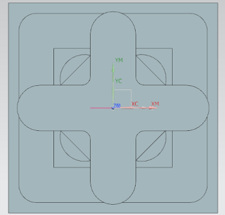
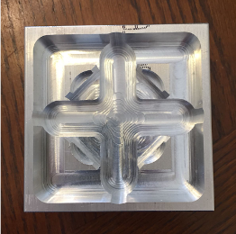

These are experimental designs to explore manufacturing methods including reverse engineering and CNC machining. I explored difficulties I encountered to become more familiar with and attuned to using these technologies.
Reverse engineering is a highly useful tool to translate physical objects back into a CAD model. This can be used for easy adjustments or re-printing of multiple objects. It can, however, be difficult to successfully render an accurate CAD model of the physical object due to issues with photographing and translating the images into a model.
This project aimed to experiment with this manufacturing technique by using a phone and a program called Autodesk Recap Pro to compile the images into a 3D Computer Design which was then printed. Comparisons between the original object and the reverse engineered copy were made to evaluate the success of the process.
A number of issues were encountered including morphed background of the part, interfering surfaces, hollowed part, scale and meshing size. However, with some informed trial and error and adjustments using the editing tools in Autodesk an acceptable 3D model of the object was rendered and printed.
The printed model resembled the initial model, however there were some deviations of measurements between the objects.
Computer Numerically Controlled (CNC) machining is a computer based equipment, which receives commands in digital form and correspondingly interprets the data as requirements for positions in the x,y, and z axes as well as tool type, direction and velocity to machine a part according to the design modelled in the digital data. The parts machined very accurately follow the CAD models that are used to design and the quality of finish can be very high. CNC machining has become a vital operation in many industries including automotive, medical and all types of manufacturing. Some of the main applications of CNC machining include metal removal, metal fabrication and production of moulds.

This project involved the design and machining of a mould half using the CAD software NX 8.5 (Siemens PLM) for the design which would then be manufactured using CNC machining. There were a number of constraints including the size of stock material (an aluminum stock which was 3 inches by 3 inches by 1.5 inches), tools available (a variety of flat mills with different diameters and a ball mill), and a time constraint of 2-3 hours for the actual machining of the part. These constraints limited the design of the part. The design aimed to maximise what could be produced within these constraints, producing a mould for a fidget spinner.
